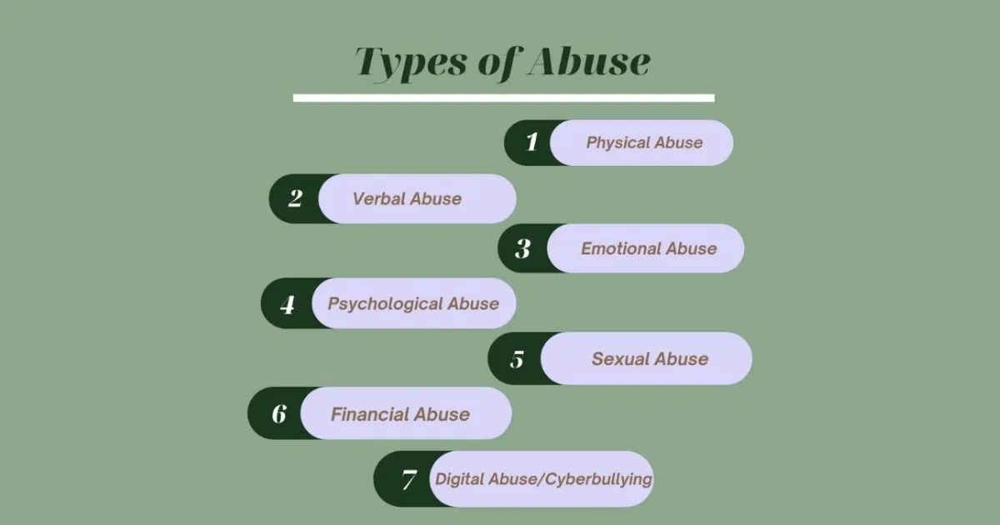
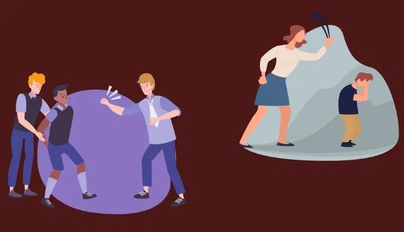
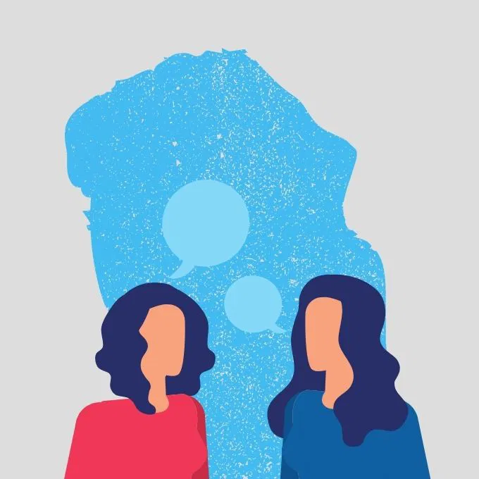
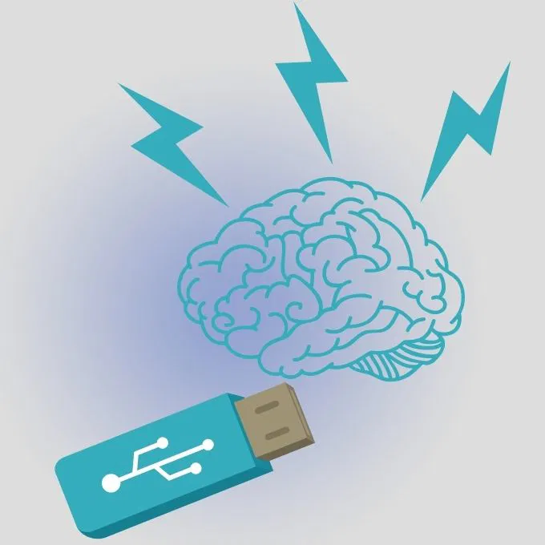

In a world that often romanticizes resilience, it is vital to recognize the darker undercurrents that can undermine mental well-being. Abuse, in any form, is a profound violation of trust and dignity, with lasting effects on the physical, emotional, and psychological health of those affected. At Soothify, we believe that awareness is the first step toward healing and empowerment. By understanding the various types of abuse and learning to recognize the signs, we can better support ourselves and others in creating safer, healthier environments. This article aims to shed light on the seven types of abuse—physical, emotional, sexual, financial, digital, verbal, and psychological—offering insights on how to identify and address them.
Physical abuse occurs when one person uses physical force against another. Physical abuse can start slowly and intermittently, such as owing an object or a slap, becoming more intense or worse over time. Therefore, this abuse usually causes bodily harm, the product of a single or repeated punishment, which can vary in size or intensity. Abusive relationships can move through a cycle of violence, which includes periods of tension and calm.
• Unexplained Injuries: Frequent or unexplained bruises, cuts, burns, or broken bones.
• Frequent "Accidents": The person may claim to be accident-prone or give implausible explanations for their injuries.
• Behavioral Changes: Victims may become withdrawn, anxious, or fearful, especially around the abuser.
• Avoidance: The person may avoid certain places, situations, or people out of fear.
• Clothing Choices: Wearing long sleeves or sunglasses indoors to cover up injuries.
Physical abuse can lead to severe long-term consequences, including chronic pain, disability, and psychological trauma. Victims often experience anxiety, depression, and post-traumatic stress disorder (PTSD).

Sexual abuse involves any non-consensual sexual activity or behavior, ranging from unwanted touching to rape. It can occur in various contexts, including within marriages or relationships.
• Unexplained Injuries to Sensitive Areas: Bruising, bleeding, or other injuries in
sensitive areas.
• Fear of Intimacy: Avoidance of sexual activity or physical closeness, even with
trusted partners.
• Changes in Behavior: Withdrawal, depression, anxiety, or unexplained anger.
• STDs or Pregnancy: Unexplained sexually transmitted infections or pregnancy.
• Secrecy: The person may avoid discussing their relationships .
If you or someone you know has experienced sexual abuse, it’s crucial to seek help.
At Soothify, we provide a non-judgmental and supportive environment where
survivors can start their healing journey. Confidential counseling services can help
you process the trauma and regain a sense of control over your life.
Financial abuse, or economic abuse, involves controlling a person's financial resources, restricting their access to money, or exploiting them financially. This type of abuse is common in relationships where one partner exerts control over the other's finances.
• Restricted Access to Money: The victim may have no control over their bank
accounts or finances.
• Forced Dependence: The abuser may prevent the victim from working or
accessing educational opportunities.
• Unexplained Debts: The victim may have unexplained debts or be forced to
sign financial documents against their will.
• Control Over Spending: The abuser may dictate all spending and monitor
every financial transaction.
• Theft or Fraud: The abuser may steal from the victim, forge signatures, or
misuse financial resources.
Financial abuse can lead to poverty, loss of independence, and long-term financial instability. Victims may feel trapped in the relationship due to financial dependence.
Neglect occurs when a caregiver fails to provide the necessary care, supervision, or resources for a dependent, such as a child, elderly person, or disabled individual. This form of abuse is common in caregiving situations and can have serious consequences.
• Poor Hygiene: The victim may appear unkempt, malnourished, or dirty.
• Unmet Medical Needs: The person may have untreated medical conditions or
a lack of access to healthcare.
• Unsanitary Living Conditions: The victim's living environment may be unsafe,
cluttered, or lacking basic necessities.
• Emotional Withdrawal: Victims of neglect may appear withdrawn, depressed,
or anxious.
• Frequent Absences: In the case of children, frequent absences from school or
activities may be a sign of neglect.
Neglect can lead to serious physical and emotional harm, including developmental delays in children, worsening health conditions, and psychological distress.

Digital abuse involves the use of technology, such as smartphones, social media, or the internet, to harass, stalk, or control another person. This modern form of abuse can be pervasive and difficult to escape.
• Constant Monitoring: The abuser may constantly check the victim's phone,
emails, or social media accounts.
• Cyberstalking: The victim may be harassed or threatened online through social
media, messaging apps, or other digital platforms.
• Invasive Control: The abuser may use GPS tracking, spyware, or other
technology to monitor the victim's whereabouts.
• Public Shaming: The abuser may post harmful or humiliating content about
the victim online.
• Forced Sharing: The abuser may demand access to the victim's passwords,
accounts, or devices.
Digital abuse can lead to severe emotional distress, anxiety, and a sense of helplessness. It can also escalate to other forms of abuse, such as physical or emotional.

Cultural or identity-based abuse occurs when an individual is targeted or mistreated based on their race, religion, ethnicity, gender, sexual orientation, or other aspects of their identity. This type of abuse often intersects with other forms of abuse.
• Discrimination: The victim may experience unequal treatment or exclusion
based on their identity.
• Verbal Attacks: The abuser may use slurs, derogatory language, or hate
speech.
• Forced Assimilation: The abuser may pressure the victim to abandon their
cultural practices, beliefs, or identity.
• Isolation: The victim may be isolated from their cultural or community support
networks.
• Hate Crimes: The abuse may escalate to physical violence or other criminal
acts based on prejudice.
Identity-based abuse can lead to feelings of shame, isolation, and loss of cultural identity. It can also result in long-term psychological trauma and impact the victim's sense of belonging.
Abuse, in any form, is a violation of one’s dignity and well-being. By understanding the various types of abuse and learning to recognize the signs, we can take proactive steps to protect ourselves and others. At Soothify, we are committed to providing support, education, and resources for those affected by abuse. Whether you are experiencing abuse or know someone who is, remember that help is available. You don’t have to face this journey alone—reaching out is the first step toward healing and reclaiming your life. Soothify is here to guide you on that path, offering a safe, supportive environment where you can find the help and strength you need. Together, we can break the cycle of abuse and build a future where everyone can live with dignity and respect. This article can serve as a foundation for raising awareness about the various forms of abuse and providing guidance on how to recognize and address them, in line with the mission of Soothify.